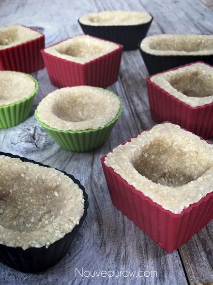
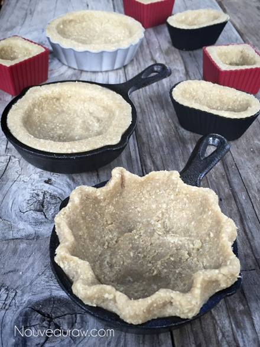
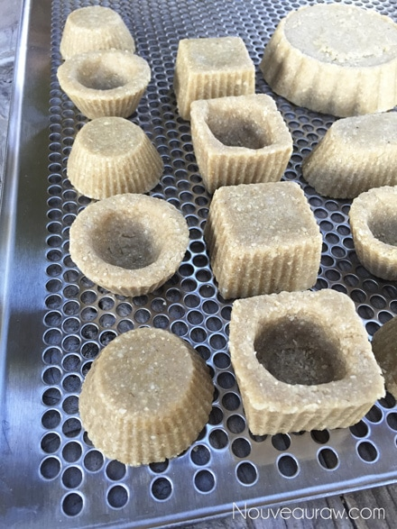
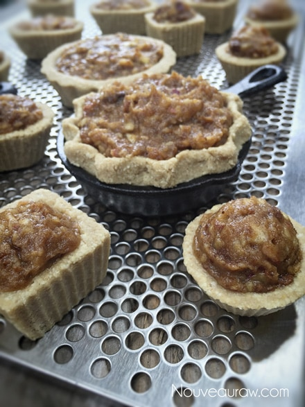
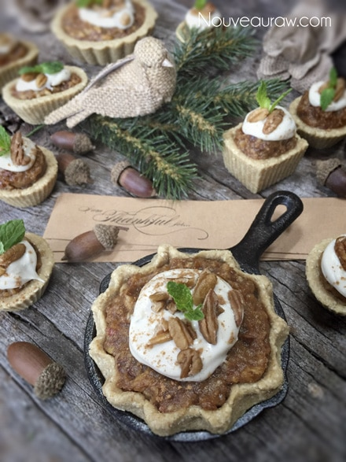
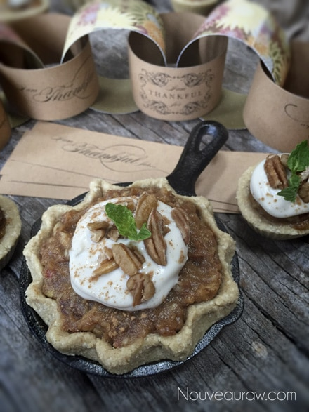

Mince Pie

~ raw, vegan, gluten-free ~
These precious little pies were perfect for our holiday party at work. Everyone just loved, and I even had a friend come up to me and told me that he grew up eating mince pie and it tastes just like the cooked version.
A mince pie, also known as minced pie, is a small British fruit-based mincemeat sweet pie traditionally served during the Christmas season. The early mince pie was known by several names, including mutton pie, and Christmas pie. Typically its ingredients were a mixture of minced meat, suet, a range of fruits, and spices such as cinnamon, cloves, and nutmeg. Be assured that no meat was used in this raw rendition.
I looked up the ingredient used for a commercially made pie (just in case you were looking to take the easy way out for the holidays and purchase an already-prepared one) … now does this sound appealing?
“FILLING: APPLES, WATER, CORN SYRUP, BROWN SUGAR, RAISINS, CANDIED ORANGE CITRUS PEEL (ORANGE PEEL, CORN SYRUP, HIGH FRUCTOSE CORN SYRUP, CITRIC ACID, PRESERVED WITH 1/10 OF 1% SODIUM BENZOATE AND SORBIC ACID, SULFUR DIOXIDE), MODIFIED FOOD STARCH CONTAINS 2% OR LESS OF: CURRANTS, MOLASSES, APPLE CIDER VINEGAR, SPICE, SALT, VITAMIN C, ASCORBIC ACID, COATED, 97.5%, CITRIC ACID, MALIC ACID, PRESERVED WITH SODIUM BENZOATE.
CRUST: WHEAT FLOUR, VEGETABLE SHORTENING (PALM OIL AND SOYBEAN OIL WITH MONO- AND DIGLYCERIDES), WATER, DEXTROSE, CONTAINS 2% OR LESS OF: SALT, CITRUS FIBER, CORN SYRUP, WHEY, BAKING SODA, BLEACHED WHEAT FLOUR WITH MALTED BARLEY, PRESERVED WITH POTASSIUM SORBATE.”
Why do we eat such unnecessary ingredients? Thank goodness we can easily make our own healthier versions of such treats.
The pumpkin spice mix is a combination of warm, sweet-smelling spices that can easily be made up in your very own kitchen. Combine in a small mason jar; 1/3 cup ground cinnamon, 1 tablespoon ground ginger, 1 tablespoon ground nutmeg or mace, 1-1/2 teaspoons ground cloves, and 1-1/2 teaspoons ground allspice. Tighten the lid and shake vigorously to mix.
This quantity amount will be more than what is needed for this recipe, but with Thanksgiving and the holidays just around the corner, it will be nice to have some extra on hand to play with. But don’t limit this spice to just the holidays, anytime a recipe calls for cinnamon, nutmeg, or cloves, use this. It adds a nice depth of flavor.
Ingredients:
Crust:
Filling:
- 1 1/2 cups date paste
- 1/4 cup orange juice
- 1 1/2 tsp pumpkin pie spice
- Pinch sea salt
- 2 medium apples, chopped small
- 1 cup raisins
Cashew icing:
- 1 1/2 cup raw cashews, soaked 2 + hours
- 1 Tbsp lemon juice
- Pinch salt
- 3 Tbsp cold-pressed coconut oil
- 1/4 cup maple syrup
- 1/2 cup water
Preparation:
Crust:
- You will want to start out with soaked and dehydrated cashews. Using just soaked cashews will create a really pasty-textured crust.
- In a food processor, fitted with the “S” blade, combine the cashews, oat flour, and salt. Process until the cashews break down to a flour-like texture.
- Add the maple syrup (or liquid sweetener of choice), water, and lemon juice.
- Process until the ingredients create a ball of dough.
- Don’t over-process or the cashews will release so much of their natural oils, leaving you with an oily crust.
- Press the mixture into mini, silicone tart/muxffin cups.
- The amount used will depend on what size you wish to make them.
- Once the crusts have been shaped, remove them from the molds and place them on the mesh sheet that comes with the dehydrator. Dry at 115 degrees F for about 10 hours.
- They should be dry enough to handle, hold shape, and not be sticky to the touch.
- If you are pressed for time, you can skip the dehydration process. Just keep the desserts chilled up until serving.
Filling:
- Back in the food processor, fitted with the “S” blade, process the date paste, juice, pumpkin spice, and salt together.
- Add in the apple and raisins and process for a further 5 – 10 seconds until thoroughly combined. The apples should be a small-bite size.
- Fill each of the crust cases with a little of the mixture then top with the cashew icing and a pinch of the nutmeg.
Cashew Icing:
- Blend all ingredients in a high-speed blender until completely smooth.
- Chill until it firms up a bit. The texture will remain soft like a sour cream texture.
- Place a dollop on top of the pie, sprinkle with crushed pecans, a pinch of cinnamon or nutmeg, and perhaps a mint leaf for color.
**Amie Sue’s notes: I ended up with 2 cups of extra filling. Maybe my apples were larger than they needed to be. But have no fear, nothing went to waste. I created a batch of cookies out of it. See here. I slightly modified this recipe from James Russell.
*This recipe was originally posted on Dec. 5th, 2010. Today, Oct. 22nd, 2014, I updated the photos… the recipe remains the same.






© AmieSue.com